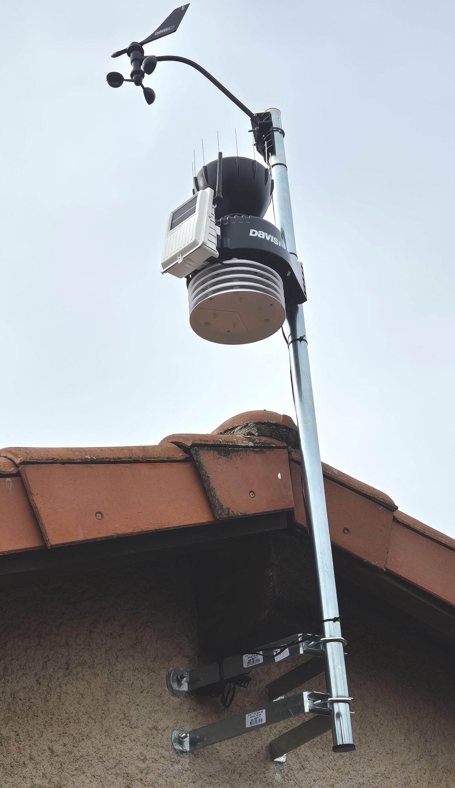
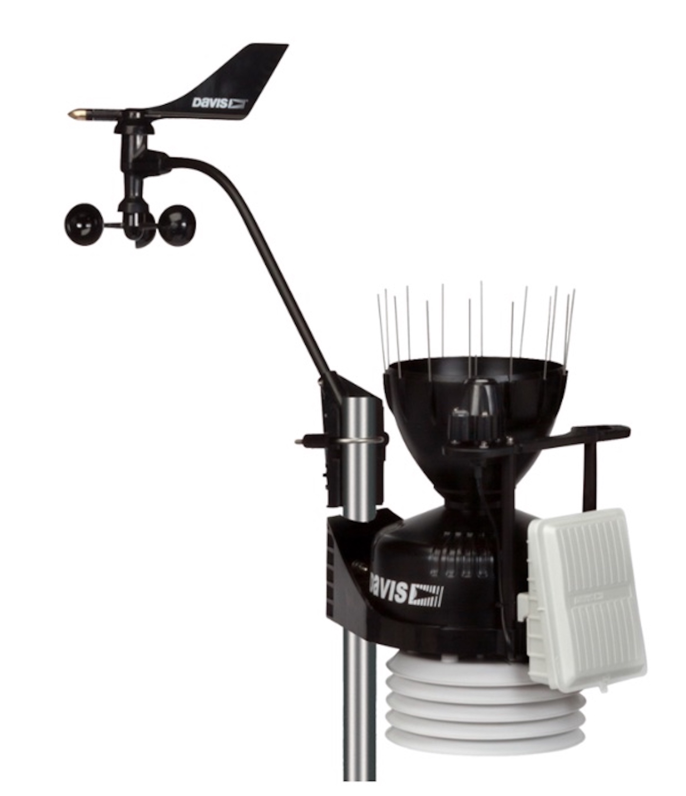

Installée en février 2024 à l’initiative de l’AGUPE, elle enregistre les mesures météorologiques toutes les 10 secondes.
Les données sont transmises en temps réel au réseau de l’association
Infoclimat.


Météo et climat
La météorologie prévoit le temps local des jours à venir, en introduisant les mesures quotidiennes locales dans des « modèles » de calcul des phénomènes atmosphériques.
La climatologie étudie les modifications des données météorologiques sur de longues durées et analyse les causes et effets du réchauffement global actuel.
Les mesures quotidiennes sont utiles pour :
prévoir des épisodes violents
optimiser les activités agricoles
réguler les travaux de construction, voirie
ajuster les activités de plein air : sportives,culturelles et touristiques
et surtout :
leur enregistrement sur de longues périodes est essentielle pour l'étude de l'évolution climatique actuelle.
Les grandeurs mesurées par la station
Température (°C)
Pression (hPa)
et tendance barométrique
Humidité (%)
température de rosée
Précipitations mm/jour
Vitesse du vent (m/s)
et direction du vent
Ensoleillement